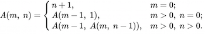

Функция Аккермана — простой пример вычислимой функции, которая не является примитивно рекурсивной.
Она обозначается A(m,n), принимает два неотрицательных целых числа в качестве параметров и возвращает натуральное число. Эта функция растёт очень быстро, например, число A(4,4) настолько велико, что количество цифр в порядке этого числа многократно превосходит количество атомов в наблюдаемой части Вселенной.
Функция Аккермана определяется рекурсивно для неотрицательных целых чисел m и n следующим образом:

Программа расчитывает функцию Аккермана